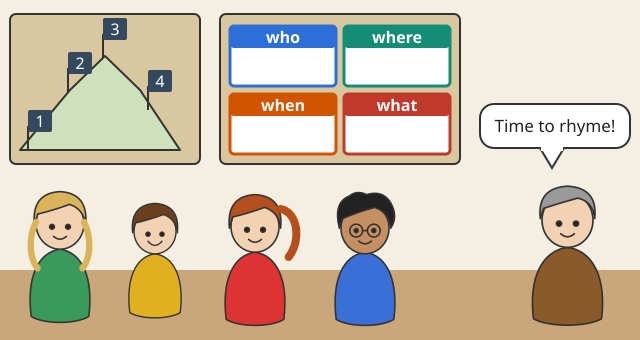
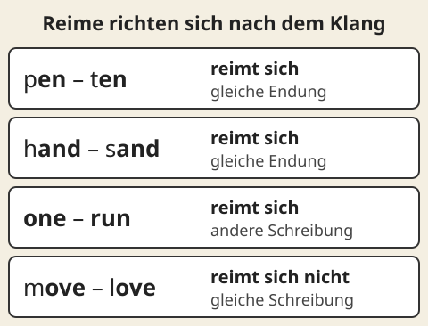

Reime hören, finden und sprechen
Mit einem KI-Tutor lernen
Ein KI-Tutor erklärt dir diese Seite und hilft dir bei den Aufgaben. Wähl deinen Assistenten:
Mit Claude öffnen Mit ChatGPT öffnen Mit Mistral Vibe öffnen
Du nutzt dein eigenes Konto beim Anbieter. Der Assistent ist kein Angebot von lernapps.net: lernapps liefert nur Inhalte und Aufgaben. Die Wahl gilt für alle Seiten, nur auf diesem Gerät.
Ein Reim zum Wochenende

Von links: Sophie (Zöpfe), Peter (gelbe Jacke), Ellie (roter Pferdeschwanz), Amir (Brille) und Mr Hill (graue Haare). An der Wand hängen der Geschichtenberg und die story map.
Quelle: eigene Zeichnung. Lizenz: CC-BY-4.0.Es ist Freitag, die Geschichtenwoche ist fast vorbei. Mr Hill schließt sie mit einem Reim ab (englisch: rhyme). Zwei Wörter reimen sich, wenn sie am Ende gleich klingen. Mr Hill sagt das Wort star. Amir sucht ein Reimwort.
Aufgabe
Lösung
car richtige Antwort
Star und car klingen am Ende gleich.
start
Es beginnt wie star, aber das Ende klingt anders.
sun
Nur der Anfang ist ähnlich. Ein Reim hängt am Ende.
Beim Reim zählt der Klang am Ende des Wortes.
Das kannst du danach: Du findest Reimwörter, sprichst kurze Verse laut nach und schreibst selbst einen Zweizeiler.
Diese Wörter sind neu auf dem Klassenzimmer-Poster.
| Wort | Bedeutung |
|---|---|
| rhyme | Reim |
| verse | Vers, hier eine Zeile eines Gedichts |
| rhythm | Rhythmus |
Reimwörter finden und Verse sprechen
Reimwörter findest du so: Nimm die Endung eines Wortes und setze andere Anfänge davor. Die Endung von pen ist -en. Setzt du t davor, wird daraus ten, mit h wird es hen. Meistens reimen sich Wörter mit gleicher Endung.

Vier Wortpaare vom Klassenzimmer-Poster. Fett steht der Teil, den du vergleichst: die Endung, bei one und run das ganze Wort.
Quelle: eigene Zeichnung. Lizenz: CC-BY-4.0.Verse sprichst du laut. Hör zuerst zu und sprich dann ganze Verse nach, nicht einzelne Wörter. Klatsche dabei den Rhythmus: bei jeder betonten Silbe einmal. Haben zwei Zeilen gleich viele betonte Silben, passt der Rhythmus. Das hörst du selbst, die App prüft es nicht.
Merke
Reime richten sich nach dem Klang, nicht nach den Buchstaben. Die Schreibung hilft oft: Wörter mit gleicher Endung reimen sich meistens. Es gibt Ausnahmen. One und run reimen sich, obwohl sie anders geschrieben sind. Move und love sehen am Ende gleich aus, aber sie reimen sich nicht. Sprich ein Paar darum immer laut.
Reimpaare finden und Verse ordnen
Aufgabe
Lösung
Richtige Antwort: cat – hat; light – night; day – play; boat – coat
Die Wörter haben die gleiche Endung und klingen am Ende gleich.
Aufgabe
Lösung
me richtige Antwort
Tree und me klingen am Ende gleich.
you
Der Sinn passt, aber you reimt sich nicht auf tree.
all
Der Sinn passt, aber all reimt sich nicht auf tree.
Ein Reimwort passt zum Sinn und klingt am Ende wie das Wort der ersten Zeile.
Aufgabe
Lösung
food – good
Die Schreibung ist am Ende gleich, aber man spricht die Wörter verschieden.
bed – head richtige Antwort
Die Schreibung ist anders, aber der Klang am Ende ist gleich.
now – know
Sie sehen fast gleich aus, klingen am Ende aber verschieden.
Reime richten sich nach dem Klang. Die Buchstaben sagen es nicht immer.
Aufgabe
Lösung
Richtige Antwort: 1. Two little birds sat on the school wall,, 2. one was big and one was small., 3. The big one sang, the small one flew,, 4. and then the big one followed too.
Die Vögel sitzen zuerst auf der Mauer, einer groß, einer klein. Dann singt der große, der kleine fliegt weg und der große folgt.
Aufgabe
Ergänze das Reimwort am Ende. Es reimt sich auf das Wort im Hinweis.
Tipp
Setze andere Anfangsbuchstaben vor die Endung des Wortes im Hinweis. Auch mehrere Buchstaben können sich ändern.
- Rhymes with book. → I read my book and take a ….
- Rhymes with down. → The rain falls down on the ….
- Rhymes with snowing. → It is cold and snowing, where are we …?
Lösung
- I read my book and take a look.
- The rain falls down on the town.
- It is cold and snowing, where are we going?
Aufgabe
Hör zu und schreibe den ganzen Vers. Achte auf die Reimwörter, in jedem Vers reimen sich mindestens zwei Wörter.
- KI
- KI
- KI
Lösung
- I like to see the flowers after the showers.
- Read a little letter and you will feel better.
- My brother and my mother help each other.
Verse sprechen und einen Zweizeiler schreiben
Aufgabe
Hör zu, sprich nach und nimm dich auf. Vergleiche dann mit dem Original.
Tipp
Hör zu. Sprich dann den ganzen Vers langsam nach und klatsche den Rhythmus.
- Let us sing together in the lovely weather.KI
- The monkey is funny and it likes honey.KI
- The rain is falling, and the birds are calling.KI
Zum Aufnehmen braucht diese Aufgabe JavaScript. Die Beispiele kannst du auch ohne anhören.
Lösung
- Let us sing together in the lovely weather.
- The monkey is funny and it likes honey.
- The rain is falling, and the birds are calling.
Offene Aufgabe
Schreibe einen eigenen Zweizeiler auf Englisch. Das Thema ist ein Tier oder das Wetter. Sprich ihn dann laut und klatsche den Rhythmus.
Tipp
Die App bewertet nicht. Prüfe anhand der Punkte.
Eine gute Antwort enthält:
Lösung
The wind is strong, the night is long.
Rückblick auf das Kapitel und die Woche
Das Kapitel: Du schreibst einen Dialog in Skriptform, mit Sprecher, Doppelpunkt und kurzen Sätzen. Du findest Reimwörter und sprichst Verse. Reime richten sich nach dem Klang, die Schreibung hilft oft.
Die Woche im Rückblick:
- Montag: Du liest und füllst die story map.
- Dienstag und Mittwoch: Du erzählst Bilder.
- Donnerstag: Du schreibst eine eigene Geschichte.
- Freitag: Du spielst eine Szene und sprichst einen Reim.
Die Geschichtenwoche ist geschafft.